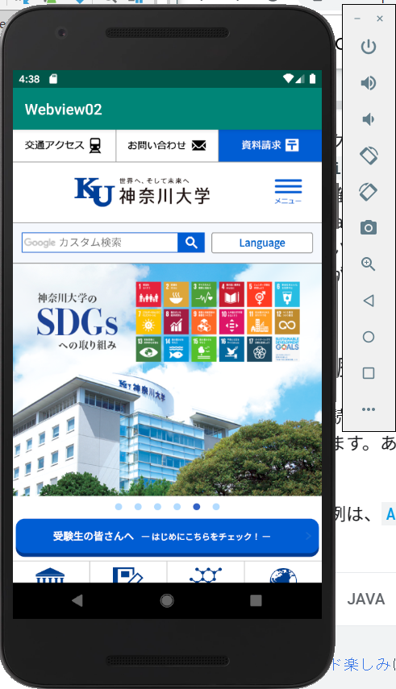

アプリケーションを制作するにあたって必要なプログラムの学習を目的として、新たな本を参照し、サンプルアプリの制作を行う。
前期では一つのアプリ制作を丁寧に紹介する形式の本で流れをつかめたため、後期ではたくさんのサンプル制作に取り組み、研究に活用する。
WINGSプロジェクト 齊藤 新三/著 山田祥寛/監修
株式会社 翔泳社/発行
B5変版・ 416ページ・ 2色
ISBN 978-4-7981-6044-3
発刊日： 2019年7月10日
アプリの画面構成として、今まではGUIと呼ばれる、部品をドラッグアンドドロップする形で配置するプログラムをしてきたが、
今回はテキストで画面構成のプログラミングを行ってみた。
さらに、リストを表示するとそれぞれ該当のメッセージが表示されるようにプログラムを書き換えた。
KUアプリへの活用…アイコンをタップするとその項目に関するリストを表示するプログラム


1.リストに表示したい項目を入力する
2.入力した項目をリストの形で表示するようにレイアウトを調整

3.表示されたリストを押すとメッセージが表示されるプログラムの作成
リストから項目を選択すると別の画面に移動するプログラムの作成「メニュー表から料理を選択し、対応した画面に移動するサンプル」
プログラムの仕組みとしては、画面が完全に切り替わるのではなく、現在の画面の上に新たな画面が表示され、
前の画面は保持されたままになっている。
KUアプリでの活用…リストから選んだ項目に該当する画面に移動するプログラム
しかし…起動には成功するものの警告メッセージが出てしまうのと同時に、アプリが繰り返し終了してしまう不具合の発生
そこで…出版社から出ているサンプルと見比べてみたところ、同じところで警告メッセージが出ている。
しかし、サンプルでは自分で入力したアプリで起こった不具合がなく問題なく起動ができている。→それ以外の項目に違いがある？
以下は試してみたことになります。
①androidstudioの更新通知が来ていたので、更新と追加項目のダウンロードを試してみる→一時期エミュレーター自体が動かなくなってしまうこともあったが、SDKのダウンロードなど最初に行ったことをやり直すことで解決。
②アプリが多く入りすぎているのではないか？→エミュレーターの容量を増やすために不要な試作アプリを削除してみる。
これらのことを行った結果、しっかりと動くようになりました！(原因はハッキリとは分かりませんが、コードに関しては最終的に何も変えなかったため、エミュレーターの一時的な不具合によるものだと思われます。)
【制作手順】(記入途中のため先に完成したアプリの画像だけ掲載しておきます。)
指定した項目を選ぶと
新しい画面に遷移する。(リストに戻るボタンで最初の画面に戻る。)
まず、アプリでウェブサイトを参照するためには
①アプリを離れてブラウザーを起動して閲覧する方法
②「webview」というレイアウトパーツを使ってアプリから離れずに閲覧する方法
以上の2つの方法がある。今回は②のwebviewを使った方法でウェブサイト参照ができるのか試す。
KUアプリでの活用…画面遷移したリストに対応する項目の情報が掲載されたウェブサイトを閲覧する。
今回作ろうとしている試作は本の掲載がないためインターネットを参考に調べてみたところ、
このようなサイトが見つかった。しかしこれはJavaでプログラムが書かれており、活用するためにはKotlinに書き換える必要性がある。
そこで今回はJavaのプログラムをKotlinに書き換える機能を使って試してみることにした。
しかし、URLを神奈川大学のホームページに指定して行ったところ、エミュレーターは正しく起動したものの、ウェブサイトが表示されず真っ白の画面になってしまう。
そこで、他に参照できるサイトはないかを探してみたところ、
AndroidstudioのDeveloperサイトにwebviewの紹介がされているのを発見。英語表記であるもののKotlinでの書き方を含めて書かれている。
これを参考にしているうちに、はじめに試したアプリではJavascriptの表示について何も設定していなかったために空白のページが出てしまったことが判明した。→デフォルトで非表示になっているため。
KOtlinでのプログラム作成の結果、このような形でブラウザーとほとんど変わらない画面表示を行うことができた。

また、このままでは指定したURLしか表示できない設定になっているので、タップしたサイトをアプリ内部に反映させるプログラムを書き加えた結果、これもうまく反映された。
しかし、この形だと戻るボタンがなく操作性があまりよくないものになってしまうため、KUアプリで利用するためにはサンプル2を参考に戻るボタンを追加してみたものを作成する必要がある。
→AndroidstudioのDeveloperサイトに、端末の戻るボタンを押すとブラウザの画面が元に戻るコードを発見。うまく反映させることができた。